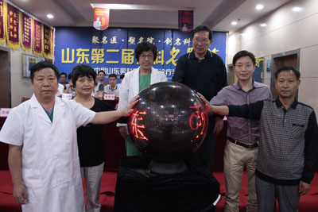

山东首届男科学疑难病诊疗手术研讨会圆满落幕 两岸三地专家强势阵容助阵济南九龙医院
2018-10-09 17:28:00来源：大众网作者：
10月3日，山东省第二届男科名医节暨2015中国山东男科学疑难病诊疗手术研讨会的启动仪式在享有盛誉的泉城济南圆满落下帷幕。记者在活动现场了解到，出席本次开幕式的有国务院特殊津贴获得者、北京协和医院泌尿外科主任、济南九龙泌尿专科医院男科博导专家臧美孚教授，台湾性治疗师、山东嵩馥性健康管理中心曾宝莹女士、济南九龙泌尿专科医院柯钦智院长等数十位界内权威专家学者。
济南九龙泌尿专科医院院长柯钦智在开幕仪式上指出，为了让国内外男科疑难疾病诊疗新技术、新方法、新思路及时在山东得到普及与交流，提高山东整体学术水平和临床诊疗水平，转变男性朋友在自我健康认识上的误区，济南九龙泌尿专科医院特此举行山东第二届男科名医节暨2015中国山东男科学疑难病诊疗手术研讨会。柯钦智院长还讲到，济南九龙医院自建院以来，一直是北京权威机构和三甲医院的合作医疗机构，医院自身也在不断努力。通过举办男科名医节邀请到中国最权威的男科专家亲临指导，更主要是学习到新的医疗技术和方法，学习国际和国内最先进的医疗成果和临床应用，让患者不出济南就能享受到比较好的医疗服务。
北京协和医院泌尿外科主任臧美孚教授在开幕式致辞中赞誉了济南九龙医院近年来的迅猛发展，不仅肯定了九龙男科医院这两年来的发展成绩，还承诺，作为济南九龙泌尿专科医院的博导男科带头人，将继续带领医院走向更加专业、权威的男科诊疗的发展道路，为了泉城乃至山东各地男性健康付出应有的职责。
国务院特殊津贴获得者、北京协和医院泌尿外科主任臧美孚教授在开幕式上讲话
济南九龙泌尿专科医院柯钦智院长在开幕式上讲话
台湾性治疗师、山东嵩馥性健康管理中心曾宝莹女士在开幕式上讲话
在交流会上，国务院特殊津贴获得者、北京协和医院泌尿外科主任、济南九龙泌尿专科医院男科博导专家臧美孚教授，台湾性治疗师、山东嵩馥性健康管理中心曾宝莹女士、济南九龙泌尿专科医院柯钦智院长等分别就当前国际男科健康形势发表了自己的看法，并分享了这些年来对男科疑难病学的诊疗研究成果，多角度的论证了微创手术对男科疾病诊疗的重要性。

济南九龙泌尿专科医院院长陈尚国表示，在名医节期间医院方面除了开展学术交流、健康检查、疑难杂症诊疗等多个活动外，还投入了百余项男科疑难病诊疗最新技术，并全面应用于医院的临床诊疗当中，确实提高齐鲁男性健康诊疗水平，让每一位男性享受到微创手术所带来的健康盛宴。